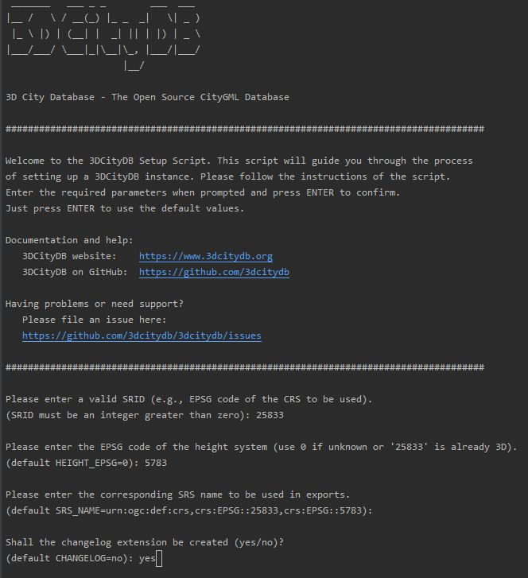

Setup
The scripts required for setting up the 3D City Database (3DCityDB) are located in the subfolder 3dcitydb/postgresql/ within the installation directory of the CityDB-Tool.
Shell scripts¶
To set up a 3D City Database instance, a number of batch scripts (Windows) and shell scripts (UNIX/Linux/macOS) are available in the subfolders shell-scripts/windows and shell-scripts/unix, which query the required input from the user and then call the corresponding SQL scripts in the background. This separation makes it possible to use the SQL scripts in third-party software, automatic processes or continuous integration workflows.The following table provides an overview of the available shell scripts:
| Script | Explanation |
|---|---|
| connection-details | Stores the connection details for a 3DCityDB instance which are used by all other scripts |
| create-db | Creates a new 3DCityDB instance (relational schema including all database functions) |
| create-schema | Creates an additional data-schema (analogous to the schema 'citydb') with a user-defined name |
| drop-db | Drops a 3DCityDB instance (incl. all elements of the relational schema) |
| drop-schema | Drops a data-schema that has been created with create-schema |
| grant-access | Grants read-only or read-write access to a 3DCityDB instance |
| revoke-access | Revokes read-only or read-write access to a 3DCityDB instance, which has been granted with grant-access |
| create-changelog | Create the changelog extension for a 3DCityDB instance |
| drop-changelog | Remove the changelog extension from a 3DCityDB instance |
Prior to executing a shell script, please make sure to set the connection details for the 3DCityDB in the connection-details script. The shell scripts can be executed with a double click or from within a shell environment. Under UNIX/Linux, execution permissions for the shell script may have to be set beforehand:
Afterward, simply run the starter script by typing:
SQL scripts¶
The sql-scripts subfolder contains the SQL scripts, that are invoked by the shell scripts and perform the actual changes at the database level. There are a number of additional SQL scripts, which are grouped into the following three subfolders:
- schema: Contains all SQL scripts required to set up the database schema.
- citydb-pkg: contains SQL scripts
- delete.sql facilitates to delete single and multiple city objects
- envelope.sql allow a user to calculate the maximum 3D bounding volume of a feature object identified by its ID
- srs.sql dealing with the coordinate reference system used for a 3DCityDB instance
- constrains.sql includes stored-procedures to define constraints or change their behavior
- util.sql can be seen as a container for various single utility functions.
- util contains the SQL scripts for utilizing those processes, that are executed through the above-mentioned shell scripts
Docker scripts¶
The subfolder docker-scripts contains a shell script, which can be invoked while starting a database Docker container to create an instance. A Dockerfile allows for automatically building a 3DCityDB Docker image. Prior to building a 3DCityDB Docker image, please make sure that a Docker Engine has been installed and is running on your host computer. A detailed description of how to install a Docker Engine can be found in the official Docker online documentation. In addition, Internet access is required for pulling the base database Docker image from the remote Docker registry during the image build process. More details about how to use the 3DCityDB Docker scripts can be found in the following subsections.
How to create a 3DCityDB instance¶
Step 1 - Create an empty PostgreSQL database¶
Choose a superuser or a user with the CREATEDB privilege to create a new database on the PostgreSQL server. As owner of this new database, choose or create a user who will later set up the 3DCityDB instance. Otherwise, more permissions have to be granted. The following command shows, how to create a database for the user 'citydb_user'. An alternative way to create a new database is to use the graphical database client pgAdmin, which is shipped with PostgreSQL’s distribution package. Please check the pgAdmin documentation for more details.
Step 2 - Add the PostGIS extension¶
The 3D City Database requires the PostGIS extension to be added to the database. This can only be done as superuser. The extension can be added with the following command (or, alternatively, using pgAdmin):
Hinweis
If running PostGIS version 2.2 or higher you can optionally install the PostgreSQL extension postgis_sfcgal to enable advanced spatial 3D operations like extrusion, volume calculation or union/intersection/difference of solids (polyhedral surfaces).
Step 3 - Edit the connection-details script¶
Go to the 3dcitydb/postgresql/shell-scripts directory and choose the subfolder matching your operating system. In this subfolder, open the connection-details file with a text editor of your choice, and enter the connection details to the database as well as the local path to the psql executable.Here is an example of how the connection-details can look like:
Hinweis
If the psql binary is already registered in your system path, then you do not have to set the PGBIN parameter.
Step 4 - Execute the create-db script¶
Once the connection details have been set in connection-details, launch the create-db script with a double click or from within a shell environment to start the setup process. The create-db script is located in the same folder as connection-details. It is also possible to apply another connection-details file located in a separate folder:
After executing the script, a welcome message and usage hints are displayed on the console. The script requires user input on several parameters that are essential for setting up the 3DCityDB instance. This is explained in the following steps.
Step 5 – Specify the coordinate reference system¶
First, the user is prompted for the coordinate reference system (CRS) to be used for the 3DCityDB instance. The user needs to simply enter the PostGIS-specific SRID (spatial reference ID) of the CRS. In most cases, this value will be identical to the EPSG code of the CRS. There are three parameters in total that have to be provided in this step:
- The SRID to be used for the geometry columns of the database. Unlike previous versions, there is no default CRS anymore. So, this input is mandatory.
- The SRID of the height system. This information is considered metadata and does not affect the geometry columns in the database. If the above SRID already references a true 3D CRS or if the height system is unknown, enter "0" which means "not set". This is also the default value.
- The GML-compliant (URN) encoding of the CRS. This string representation is, for instance, written to CityGML files when exporting data from the database. The create-db script generates a proposal of the form
urn:ogc:def:crs,crs:EPSG::<crs1>[,crs:EPSG::<crs2>]based on the first two inputs. Just press Enter to accept this value.
Hinweis
The coordinate reference system specified during setup can be changed at any time using the database function citydb_pkg.change_schema_srid.
Step 6 – Create changelog extension¶
In the last step, the user is asked whether the changelog extension should be created for the initial 'citydb' schema. Please enter yes or no. The default value no is confirmed by simply pressing Enter. Note that the created changelog extension may result in longer runtimes for insert, delete, and update operations.
The following figure exemplifies the required user input for the create-db script.
{kind=link}
Figure 1. Example user input for the create-db script
The setup process will terminate immediately on errors. Reasons might be:
- The user executing create-db is neither a superuser nor the owner of the specified database (nor owns the privileges to create objects in that database) or
- The PostGIS extension has not been installed or
- Parts of the 3DCityDB do already exists because of a previous setup attempt. Therefore, make sure that the schemas citydb, citydb_pkg do not exist in the database when setting up the 3DCityDB
After a series of log messages reporting the creation of database objects, the chosen reference system is applied to the spatial columns. This takes some seconds and is finished when Done is displayed.
Search path and template databases¶
Usually different schemas have to be addressed in every query via dot notation, e.g.:
Fortunately, this can be avoided when the corresponding schemas are on the database search path. The search path is automatically adapted during the 3DCityDB setup. Execute the command:
to check if the schemas citydb, citydb_pkg and public are contained.
Hinweis
When using the created 3DCityDb as a template database for new databases, the search path information is not transferred and thus has to be set again, e.g.:
The search path will be updated upon the next login, not within the same session.
Truncating the database¶
PostgreSQL allows for deleting all entries in the database by using the TRUNCATE TABLE table_name CASCADE command. The following function covers all relevant tables and removes the content of a 3DCityDB within a few seconds, no matter how much data is stored in the database:
Dropping a 3DCityDB instance¶
To drop a 3DCityDB instance with all data, execute the drop-db script in the same way as create-db. The connection parameters defined in connection-details are used to connect to the database.
Hinweis
The script removes all 3DCityDB schemas and the contained data. The PostgreSQL database itself is not dropped.
Docker Support¶
The 3DCityDB can also be run in a PostgreSQL Docker container. You can either build your own Docker image based on scripts shipped with the 3DCityDB as described below in step 1a. Alternatively, you can also use a pre-built image available from the 3DCityDB DockerHub. In this case, you first have to pull the pre-built image in your Docker environment as described in step 1b. Afterward, you can proceed with step 2 to run Docker containers using your images.
Hinweis
To run Docker containers or build your own images, you first have to install Docker on your system. How to set up such an environment is, however, outside the scope of this user manual. Downloads and detailed instructions for various operating systems can be found in the Docker homepage. Please get in contact with our support team in case you need help or assistance.
Step 1a - Building a 3DCityDB Docker image¶
The first step for running a 3DCityDB instance inside a Docker container is to build a 3DCityDB Docker image. This can be done by running the following command from the subfolder vcdb/postgresql
After running the above command, a 3DCityDB docker image will be created based on the official PostgreSQL/PostGIS Docker image from the Docker Hub. If you want to use a specific PostgreSQL/PostGIS version, the command below should be used instead:
Please replace the {version} token in the above command with your chosen version. You may also need to beforehand check that a PostgreSQL/PostGIS Docker image of the chosen version is available in the Docker Hub. Afterward, proceed with step 2.
Step 1b - Load a pre-built 3DCityDB Docker image¶
Loading a pre-built 3DCityDB Docker image can be done by simply running the command as shown below.
Step 2 - Start a 3DCityDB Docker Container¶
A 3DCityDB container is configured by settings environment variables inside the container. For instance, this can be done using the -e VARIABLE=VALUE flag of docker run. The 3DCityDB Docker images introduce a set of variables, whose behavior is described below.
| Environment variable | Description |
|---|---|
SRID |
EPSG code for the coordinate reference system (CRS) to be used for the 3DCityDB instance. If the SRID is not set, the 3DCityDB instance will not be created, and you will end up with a plain PostgreSQL/PostGIS Docker container. |
HEIGHT_EPSG |
EPSG code of the height system. You may omit it or use 0 (default value), if the value is unknown or the above SRID is already 3D. |
SRS_NAME |
The srsName to be used in CityGML exports. If this variable is not set, its value will be automatically created in the form urn:ogc:def:crs,crs:EPSG::<SRID>[,crs:EPSG::<HEIGHT_EPSG>] based on the values of the above SRID and HEIGHT_EPSG variables. |
CHANGELOG |
yes or no (default value) to specify whether the changelog extension should be created in the 3DCityDB instance to be created. |
POSTGRES_USER |
The database username of the 3DCityDB instance to be created. The default value is postgres. |
POSTGRES_DB |
The database name of the 3DCityDB instance to be created. If not set, the database name is identical to the value of the above POSTGRES_USER variable. |
POSTGRES_PASSWORD |
The database password of the 3DCityDB instance to be created. Please note that this variable is mandatory. |
POSTGIS_SFCGAL |
true or false(default) to enabled or disable the PostgreSQL extension postgis_sfcgal. Please note that the postgis_sfcgal extension is currently not supported in the Linux Alpine image variants, whose version names are typically suffixed with '-apline'. Thus, setting the variable to true on these kind of images will have no effect. |
There are more configuration parameters available for the PostgreSQL/PostGIS Docker container itself. Please refer to the websites PostgreSQL and PostGIS for more details. The following example shows how to set up and run a 3DCityDB Docker container based on the 3DCityDB Docker image: